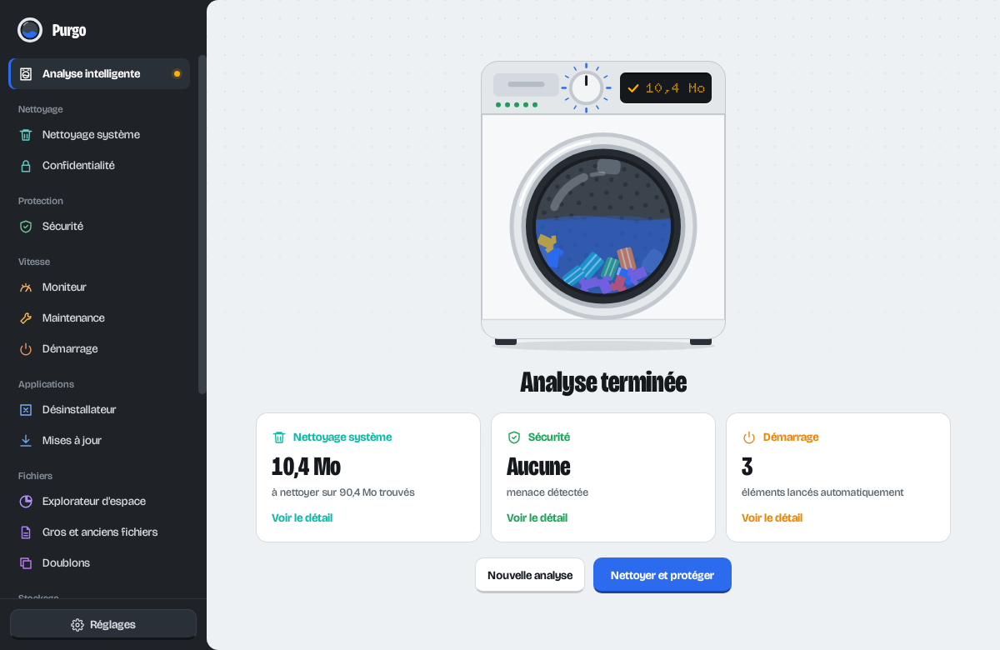
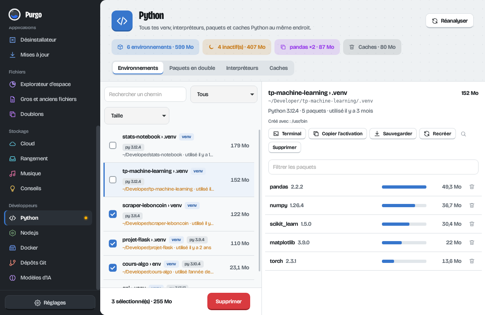
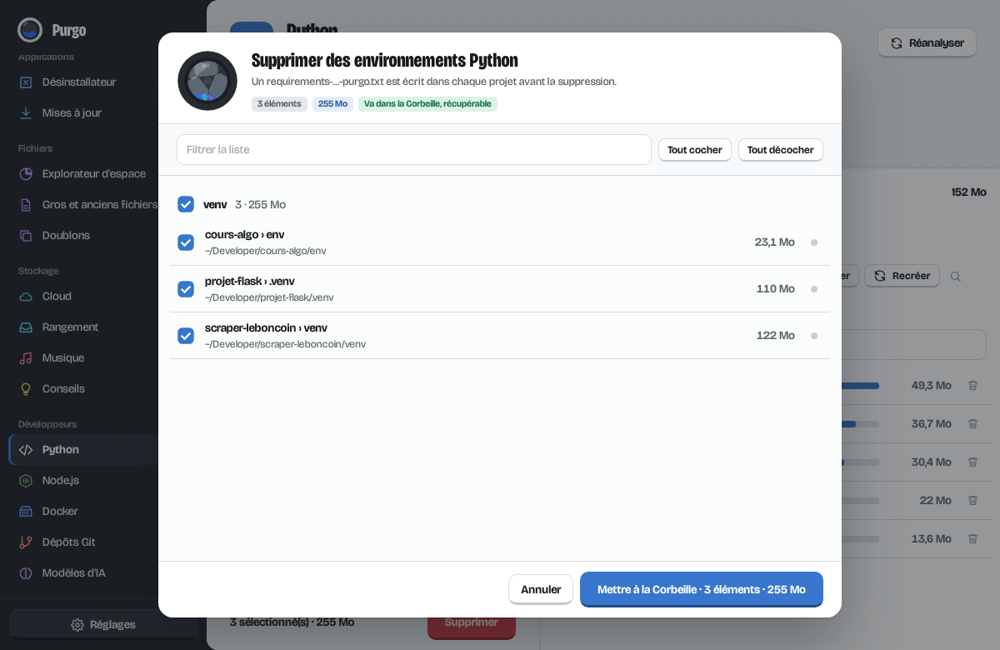

Ton ordinateur a besoin d'une lessive.
Purgo vide les caches, retrouve les gros fichiers et les doublons, désinstalle proprement et surveille ce qui ralentit ta machine. Il fait aussi le tri dans tes venv Python, tes node_modules et tes modèles d'IA oubliés.
Gratuit et open source. Windows, macOS et Linux. Environ 3 Mo.
Appuie sur Départ pour lancer un cycle.
Sept programmes, un seul bouton
L'analyse intelligente lance le nettoyage, la sécurité et le démarrage d'un coup. Chaque programme reste aussi disponible à part, comme sur le sélecteur d'une machine.
- NettoyageCaches, journaux, fichiers temporaires, vieux installeurs, Windows.old, historique et cookies des navigateurs.
- ProtectionAdwares connus, lancements et tâches planifiées suspects, extensions douteuses, état de Defender, XProtect ou ClamAV.
- VitesseProcesseur, mémoire, disque et batterie en direct, applis gourmandes, maintenance et éléments de démarrage.
- ApplicationsDésinstallation avec les fichiers qui traînent après, mises à jour via winget, Homebrew, APT, Flatpak, Snap et les autres.
- FichiersExplorateur d'espace dossier par dossier, gros fichiers pas ouverts depuis longtemps, doublons repérés au bit près.
- StockageCopies locales iCloud et OneDrive, rangement de Téléchargements et du Bureau, réglages qui libèrent de la place.
- DéveloppeursVenv et interpréteurs Python, node_modules, Docker, dépôts Git, modèles Ollama, Hugging Face et LM Studio.

Fait par quelqu'un qui crée un venv par exercice
Les nettoyeurs classiques ne voient pas ce que laisse un développeur. Purgo liste chaque environnement Python avec sa version, sa taille et sa dernière utilisation. Il repère ceux que tu n'as pas ouverts depuis des mois et les paquets installés en double partout.
Avant de supprimer un venv, il peut écrire un requirements.txt dans le projet. Tu pourras tout réinstaller en une commande.
- venv, Conda, Poetry, pipx, pyenv, uv
- node_modules et caches npm, Yarn, pnpm
- images, volumes et conteneurs Docker
- dépôts Git non poussés ou abandonnés
- modèles Ollama, Hugging Face, LM Studio, Whisper


Rien ne part sans que tu l'aies vu
Avant chaque suppression, Purgo ouvre la liste complète de ce qui va partir. Tu décoches ce que tu veux garder, puis tu suis l'avancement élément par élément.
Tout passe par la Corbeille, donc tout se récupère. La seule action définitive est « Vider la Corbeille », et elle demande confirmation.
Télécharger
Premier lancement : ton système va hésiter
Purgo n'est pas signé avec un certificat payant, donc le système affiche un avertissement la première fois.
macOS : fais un clic droit sur Purgo dans Applications, puis Ouvrir, puis Ouvrir dans la fenêtre qui apparaît. Si macOS refuse quand même, va dans Réglages Système, Confidentialité et sécurité, et clique sur « Ouvrir quand même ».
Windows : si SmartScreen s'affiche, clique sur « Informations complémentaires », puis « Exécuter quand même ».
Linux : pour l'AppImage, rends le fichier exécutable avec chmod +x Purgo_*.AppImage.
Anciennes versions et notes de version sur la page des releases.